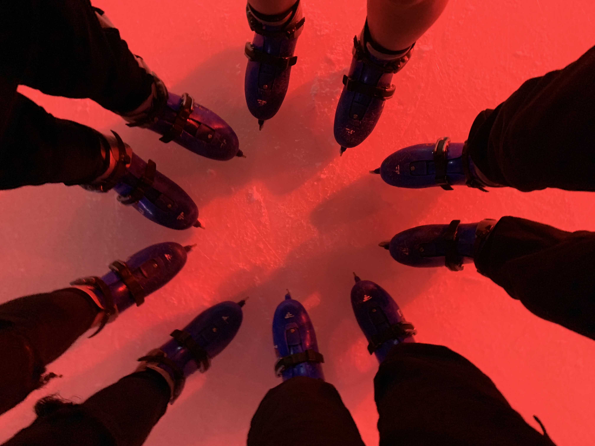

Name: Jian Wang
Age: 18 (I was born in Spring!)
Degree: Actuarial Studies/Computer Science
- Likes mint ice cream
- Likes
- Mint ice cream is refreshing!
- In PuzzleSoc writing subcom! You should all check it out 😛!
- Listening to music
- Singing
- Sleeping
- Playing card games
- Taking photos of random things
Doing absolutely nothing 😀!
Started my ice skating career during high school in year 10 with friends just casually skating around the rink.
I also had 1 year of prior inline skating experience from primary school I transferred so that definitely made it easier!
Then I began skating with two of my other friends in year 12 (who went to skate school) and they taught me how to do a two-foot spin and a waltz jump but I was really terrible at it 😅 so I kept practicing.
Eventually I finally was able to do a half-decent waltz jump and a sketchy salchow shown below:
hi